🐉 咔嚓！传承：收购公司
Clank! Legacy: Acquisitions Incorporated · 设计：Andy Clouthier & Paul Dennen Jr. · Renegade Game Studios / Dire Wolf Digital 出版 · 2–4 人 · 官方英文规则书全文翻译（16 页 · AI 辅助机翻）
本页收录《咔嚓！传承：收购公司》（Clank! Legacy: Acquisitions Incorporated, 2019）的原版官方规则书全部 16 页（底本：BGG 文件区 Renegade 官方英文规则书，Clank_Legacy_Acquisitions_Incorporated_Rulebook.pdf），逐页随图排列，点击任意图片即可放大查看；每页下方默认折叠了该页的 AI 辅助中文机翻对照，需要时可展开。规则内容归 Renegade Game Studios / Dire Wolf Digital 及版权方所有，收录仅供个人学习查阅。
整理说明：机翻对照按本站术语口径对齐（牌库/手牌/回合/轮/板块/指示物等），PDF 图文混排页的语序可能与原书视觉顺序略有出入；规则细节请一律以页面上方原书页面为准。
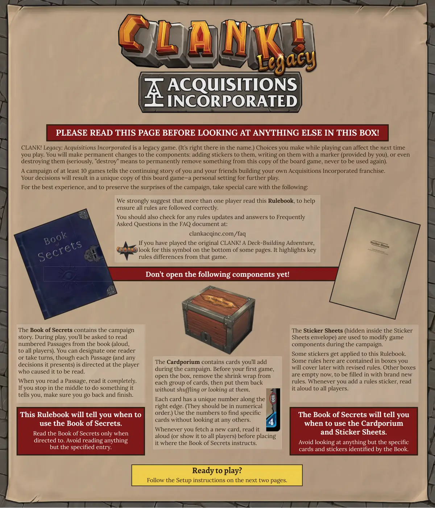
📝 第 1 页 AI 机翻对照（点击展开）
在看盒子里的任何其他东西之前，请先阅读本页！
CLANK! Legacy: Acquisitions Incorporated 是一款传承游戏。（名字里就写着呢。）游戏过程中你做出的选择可能会影响下一次游戏。你将对游戏组件进行永久性修改：给它们贴贴纸，用马克笔（由你提供）在上面书写，甚至销毁它们（认真的，"销毁"是指永久移除这本桌游中的某些东西，永远不再使用）。
至少10局的战役会讲述你和朋友们建立自己的 Acquisitions Incorporated 连锁店的持续故事。
你的决定将产生一本独特的桌游副本——一个供后续游玩的个人设定。
为了获得最佳体验，并保留战役的惊喜，请特别注意以下几点：
秘密之书包含战役故事。游戏过程中，你会被要求从书中朗读编号的段落（大声朗读，给所有玩家）。你可以指定一位读者轮流朗读，但每个段落（及其呈现的任何决定）都是针对导致它被读取的玩家的。
当你阅读一段时，请完整阅读。如果你中途停下来做它告诉你的事情，请确保你回去完成它。
卡牌馆包含你在战役期间会添加的卡牌。在第一局游戏前，打开盒子，取下每组卡牌的塑料包装，然后不要洗牌或查看就把它们放回去。
每张卡牌的右侧边缘都有一个唯一的编号。（它们应该按数字顺序排列。）使用编号来查找特定卡牌，而不查看其他任何卡牌。
每当你取出一张新卡牌时，在按照秘密之书的指示放置它之前，请大声朗读（或向所有玩家展示）。
贴纸表（隐藏在贴纸信封内）用于在战役期间修改游戏组件。
一些贴纸会被应用到这本规则书上。这里的一些规则包含在你稍后会用修订规则覆盖的方框中。其他方框现在是空的，将填入全新的规则。每当添加规则贴纸时，请向所有玩家大声朗读。
暂时不要打开以下组件！
秘密之书会告诉你何时使用卡牌馆和贴纸表。
除了秘密之书指定的特定卡牌和贴纸外，避免查看任何其他东西。
准备好开始游戏了吗？
请遵循接下来两页的设置说明。
本规则书会告诉你何时使用秘密之书。
只在被指示时阅读秘密之书。避免阅读指定条目以外的任何内容。
我们强烈建议不止一位玩家阅读本规则书，以帮助确保所有规则都被正确遵循。
你还应该检查是否有任何规则更新和常见问题的答案。
常见问题解答文档请访问：
clankacqinc.com/faq
如果您玩过原版《CLANK! A Deck-Building Adventure》（克朗！卡牌构筑冒险），请注意在一些页面底部会出现这个符号。它标明了与该游戏的关键规则差异。
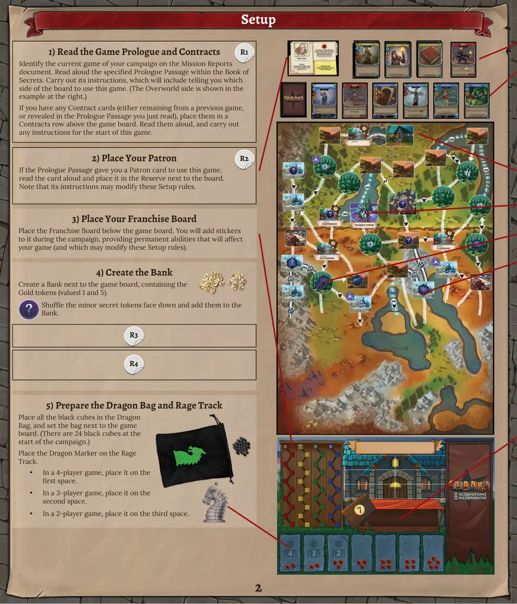
📝 第 2 页 AI 机翻对照（点击展开）
1) 阅读游戏序言和契约
在任务报告文档中确定你战役中的当前游戏。大声朗读《秘密之书》中指定的序言段落。执行其指示，这将包括告诉你本游戏使用版图的哪一面。（上方世界面如右侧示例所示。）
如果你有任何契约卡牌（可能是前一场游戏剩余的，或是你刚刚阅读的序言段落中揭示的），将它们放置在游戏板上方的契约行中。大声朗读这些卡牌，并执行任何关于本游戏开始的指示。
R1
2) 放置你的赞助人
如果序言段落给了你一张要在本游戏中使用的赞助人卡牌，大声朗读该卡牌并将其放置在版图旁边的储备区。注意，其指示可能会修改这些设置规则。
R2
3) 放置你的特许经营版图
将特许经营版图放置在游戏板下方。你将在战役期间为其贴上贴纸，提供将影响你游戏的永久能力（这些能力可能会修改这些设置规则）。
4) 创建银行
在游戏板旁边创建一个银行，包含价值1和5的金币指示物。
将次要秘密指示物面朝下洗牌并加入银行。
R3
R4
5) 准备龙袋和愤怒轨迹
将所有黑色方块放入龙袋中，并将袋子放在游戏板旁边。（战役开始时有24个黑色方块。）
将龙标记放在愤怒轨迹上。
•
在4人游戏中，将其放在第一个格。
•
在3人游戏中，将其放在第二个格。
•
在2人游戏中，将其放在第三个格。
设置
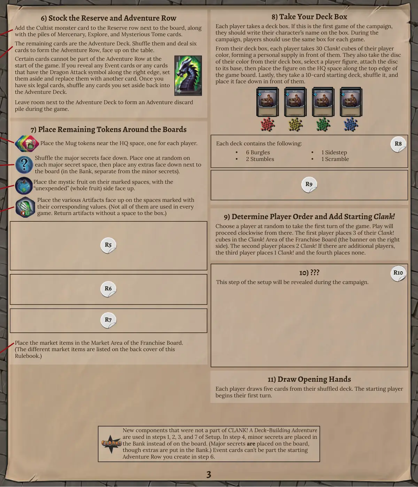
📝 第 3 页 AI 机翻对照（点击展开）
6) 补充储备区和冒险牌列
将邪教徒怪物卡牌放在版图旁边的储备区，连同佣兵、探索和神秘法术卡牌堆。
剩余的卡牌是冒险牌库。洗牌并发六张牌，面朝上放在桌上形成冒险牌列。
某些卡牌在游戏开始时不能成为冒险牌列的一部分。如果你翻到任何事件卡牌或任何沿右边缘有龙形攻击符号的卡牌，将它们放到一边，并用另一张牌替换。一旦你有六张合法的卡牌，将你放到一边的卡牌洗回冒险牌库。
在冒险牌库旁边留出空间，以便在游戏过程中形成冒险弃牌堆。
7) 在版图周围放置剩余指示物
将马克杯指示物放在总部空间旁边，每位玩家一个。
将主要秘密面朝下洗牌。随机在每个主要秘密空间上放置一张，然后将多余的牌面朝下放在版图旁边（在银行中，与次要秘密分开）。
将神秘水果放在它们标记的空间上，"未使用"（完整水果）一面朝上。
将各种神器面朝上放在标记有对应数值的空间上。（不是所有神器在每局游戏中都会使用。没有对应空间的神器放回盒中。）
R5
R6
R7
将市场物品放在特许经营版的区域。（不同的市场物品列在本规则书封底。）
8) 拿取你的牌盒
每位玩家拿取一个牌盒。如果这是战役的第一局游戏，他们应该在牌盒上写下自己角色的名字。在战役过程中，玩家应该在每局游戏中使用同一个牌盒。
从他们的牌盒中，每位玩家拿取30个自己玩家颜色的克朗！方块，在他们面前形成一个个人供应。他们还从牌盒中拿取自己颜色的圆盘，选择一个玩家棋子，将圆盘 attached 到底座上，然后将棋子放在游戏版图顶部边缘的总部空间上。最后，他们拿取一张10张起始牌库，洗牌，然后面朝下放在他们面前。
每副牌库包含以下内容：
•
6张潜行卡
•
2张跌倒卡
•
1侧步卡
•
1攀爬卡
R8
R9
- 确定玩家顺序并添加起始克朗！
随机选择一位玩家进行游戏的第一回合。游戏将顺时针进行。第一位玩家将3个克朗！方块放在特许经营版的克朗！区域（右侧的旗帜）。第二位玩家放置2个克朗！如果有更多玩家，第三位玩家放置1个克朗！，第四位玩家不放置。
- ???
此设置步骤将在战役过程中揭示。
R10
R10
R10
11) 抽取起始手牌
每位玩家从洗好的牌库中抽取五张牌。起始玩家开始他们的第一回合。
在设置步骤1、2、3和7中使用的是《CLANK! A Deck-Building Adventure》中未包含的新组件。在步骤4中，次要秘密被放置在银行中，而不是放在版图上。（主要秘密被放置在版图上，但额外的秘密被放入银行中。）事件卡不能成为你在步骤6创建的起始冒险行的一部分。
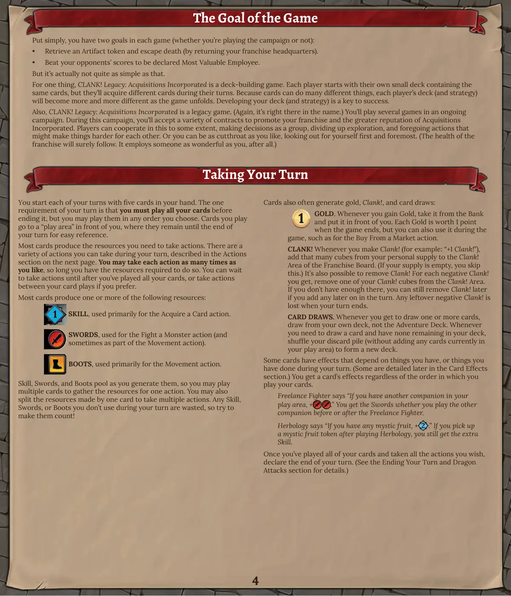
📝 第 4 页 AI 机翻对照（点击展开）
游戏目标
卡牌也经常产生金币、恐慌值和卡牌抽取：
金币。每当获得金币时，从银行中取出它并放在你面前。每个金币在游戏结束时值1分，但你也可以在游戏过程中使用它，例如用于"从市场购买"行动。
恐慌值。每当产生恐慌值时（例如："+1恐慌值！"），从你的个人供应区中取出相应数量的立方体，放入特许经营版的恐慌值区域。（如果你的供应区已空，则跳过此步骤。）也有可能减少恐慌值。对于每获得1点负面恐慌值，从恐慌值区域中移除1个你的恐慌值立方体。如果那里没有足够的恐慌值，你仍然可以在本回合稍后添加恐慌值时再移除。任何剩余的负面恐慌值在你的回合结束时将消失。
卡牌抽取。每当需要抽取一张或多张卡牌时，从你自己的牌库中抽取，而不是从冒险牌库中抽取。当你需要抽牌但你的牌库中没有剩余卡牌时，将你的弃牌堆洗牌（不添加你游戏区域中当前任何卡牌）来组成一个新牌库。
有些卡牌的效果取决于你拥有的东西，或你在回合中做过的事情。（有些在卡牌效果部分有详细说明。）无论你以什么顺序打出卡牌，你都能获得卡牌的效果。
自由战士说："如果你在你的游戏区域中有另一个同伴，+剑。"无论你是在自由战士之前还是之后打出另一个同伴，你都能获得剑。
草药学说："如果你有任何神秘水果，+技能。"如果在打出草药学后拾取了神秘水果指示物，你仍然能获得额外的技能。
一旦你打出了所有卡牌并完成了所有你希望的行动，宣布你的回合结束。（关于详情，请参阅结束你的回合和龙攻击部分。）
你每个回合开始时有5张手牌。你回合的唯一要求是必须在结束回合前打出所有卡牌，但你可以按任何你选择的顺序打出它们。你打出的卡牌会进入你面前的"游戏区域"，在那里它们保留到你的回合结束，以便于参考。
大多数卡牌产生你采取行动所需的资源。在你的回合中，你可以采取多种行动，在下一页的行动部分有描述。只要你拥有所需的资源，你可以随意采取每种行动。你可以等到打完所有卡牌后再采取行动，或者如果你愿意，也可以在卡牌打出之间采取行动。
大多数卡牌产生以下一种或多种资源：
技能，主要用于"获取卡牌"行动。
剑，用于"战斗怪物"行动（有时也作为"移动"行动的一部分）。
靴子，主要用于"移动"行动。
技能、剑和靴子会累积，因此你可以打出多张牌来为一个行动收集资源。你也可以将一张牌产生的资源分配到多个行动中。在回合中未使用的任何技能、剑或靴子都会被浪费，所以要尽量让它们发挥作用！
进行你的回合
简单来说，你在每局游戏中都有两个目标（无论你是否在进行战役模式）：
•
获取一个神器指示物并逃离死亡（通过返回你的特许经营总部）。
•
击败对手的分数，被评选为最有价值员工。
但实际上事情并非那么简单。
首先，CLANK! Legacy: Acquisitions Incorporated 是一款牌库构筑游戏。每位玩家开始时都拥有一个包含相同卡牌的小牌库，但在他们的回合中会获得不同的卡牌。由于卡牌可以执行多种不同的功能，随着游戏的进行，每位玩家的牌库（和策略）会变得越来越不同。发展你的牌库（和策略）是成功的关键。
此外，CLANK! Legacy: Acquisitions Incorporated 还是一款传承游戏。（再次强调，名字中已经体现了这一点。）你将在一个持续的战役中进行多局游戏。在这个战役中，你将接受各种合同，以推广你的特许经营和 Acquisitions Incorporated 的更大声誉。玩家在一定程度上可以合作，集体做决定，分配探索任务，并避免可能让彼此处境更困难的行动。或者，你可以像你希望的那样冷酷无情，首先考虑自己。（毕竟，特许经营的健康状况肯定会跟着你走。它雇佣了像你这样出色的人，不是吗？）
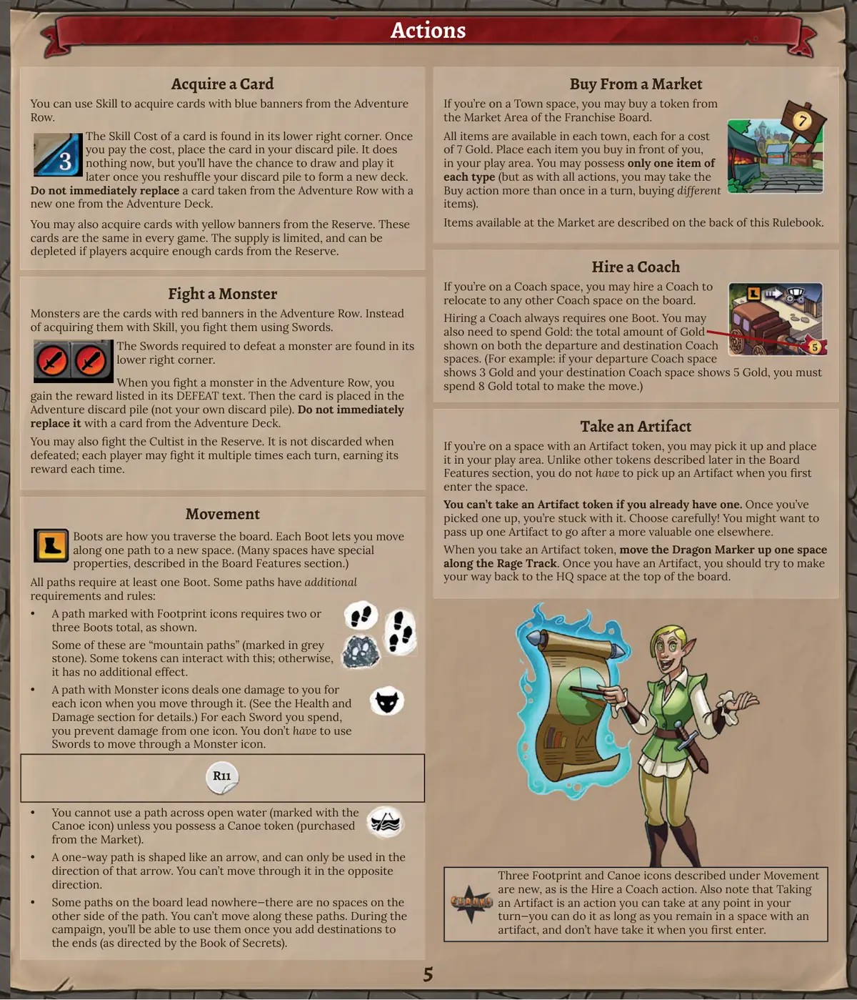
📝 第 5 页 AI 机翻对照（点击展开）
获取卡牌
你可以使用技能来获取冒险行中带有蓝色旗帜的卡牌。
卡牌的技能成本在其右下角。支付成本后，将卡牌放入你的弃牌堆。它现在不会产生任何效果，但当你重新洗弃牌堆形成新牌库后，你将有机会抽取并打出它。
不要立即用冒险牌库中的新卡牌替换从冒险行中取走的卡牌。
你也可以从储备区获取带有黄色旗帜的卡牌。这些卡牌在每局游戏中都是相同的。供应量有限，如果玩家从储备区获取了足够多的卡牌，可能会被耗尽。
战斗怪物
怪物是冒险行中带有红色旗帜的卡牌。你可以不用技能获取它们，而是使用剑来战斗。
击败怪物所需的剑数在其右下角。
当你在冒险行中战斗怪物时，你会获得其"击败"文本中列出的奖励。然后将该卡牌放入冒险弃牌堆（不是你自己的弃牌堆）。不要立即用冒险牌库中的卡牌替换它。
你也可以在储备区战斗邪教徒。被击败后不会被弃置；每位玩家每回合可以多次战斗它，每次都能获得其奖励。
移动
靴子是你穿越版图的方式。每双靴子可以让你沿着一条路径移动到一个新区域。（许多区域有特殊属性，在版图特性部分描述。）
所有路径至少需要一双靴子。一些路径有额外要求和规则：
• 标有脚印图标的路径总共需要两或三双靴子，如图所示。其中一些是"山路"（以灰色石头标记）。一些指示物可以与此互动；否则，它没有额外效果。
• 带有怪物图标的路径，每当你通过它时，每个图标会对你造成一点伤害。（详见生命值和伤害部分）。每花费一把剑，你可以防止一个图标的伤害。你不必使用剑来通过怪物图标。
• 你不能使用独木舟图标标记的跨越开放水域的路径，除非你拥有独木舟指示物（从市场购买）。
• 单向路径呈箭头形状，只能按箭头方向使用。你不能反向通过它。
• 版图上的一些路径无处可去——路径另一侧没有区域。你不能沿着这些路径移动。在战役中，一旦你按照秘密之书的指示在末端添加目的地，你就可以使用它们。
行动
从市场购买
如果你在城镇区域，你可以从特许经营版图的市场区域购买一个指示物。
所有物品在每个城镇都有供应，每个售价为7金币。将你购买的每件物品放在你面前，
在你的游戏区域内。每种类型的物品你只能拥有一个（但和所有行动一样，你可以在一个回合内多次执行购买行动，购买不同的物品）。
市场上可购买的物品描述在本规则书背面。
雇佣马车
如果你在马车格上，你可以雇佣一辆马车，移动到版图上任何其他马车格。
雇佣马车总是需要一只靴子。你可能还需要花费金币：出发地和目的地马车格上显示的金币总额。（例如：如果你的出发地马车格显示3金币，目的地马车格显示5金币，你必须总共花费8金币来完成这次移动。）
获取神器
如果你在有神器指示物的格子上，你可以拾取它并将其放置在你的游戏区域内。与"版图特性"部分后面描述的其他指示物不同，当你首次进入该格子时，不必拾取神器。
如果你已经拥有一个神器，就不能再获取另一个。一旦你拾取了一个，你就必须一直持有它。请谨慎选择！你可能愿意放弃一个神器，去获取其他地方更有价值的神器。
当你获取神器指示物时，将龙形标记沿愤怒轨道向上移动一格。一旦你拥有了一个神器，你应该尝试返回到版图顶部的总部格。
在移动部分描述的三种脚印和独木舟图标是新的，雇佣马车的行动也是新的。还要注意，获取神器是一个你可以在回合任何时间点执行的行动——只要你停留在有神器的格子上就可以执行，并且在你首次进入时不必获取。
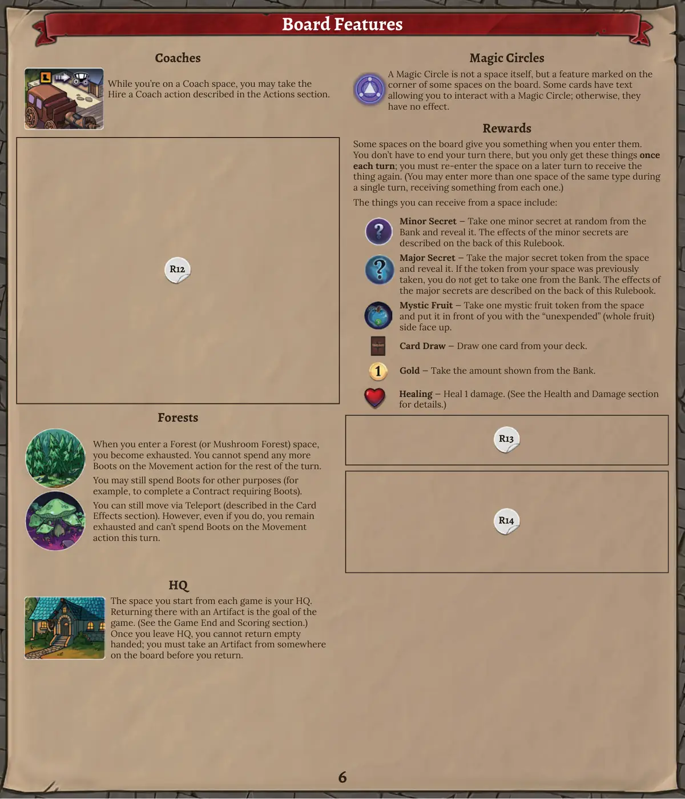
📝 第 6 页 AI 机翻对照（点击展开）
魔法圆环
魔法圆环本身不是一个区域，而是版图上某些区域角落标记的一个特性。有些卡牌有文本允许你与魔法圆环互动；否则，它们没有效果。
奖励
版图上的某些区域在你进入时会给你一些东西。你不必在那里结束你的回合，但你每回合只能获得这些东西一次；你必须在之后的回合重新进入该区域才能再次获得该物品。（你可以在单个回合内进入多个相同类型的区域，从每个区域都获得一些东西。）
你可以从区域获得的东西包括：
次要秘密——从银行随机拿取一个次要秘密并揭示它。次要秘密的效果在本规则书背面有描述。
主要秘密——从该区域拿取主要秘密指示物并揭示它。如果你所在区域的主要秘密指示物之前已被拿取，你不能从银行拿取一个。主要秘密的效果在本规则书背面有描述。
神秘果实——从该区域拿取一个神秘果实指示物，并将其正面朝上放在你面前，显示"未使用"（完整果实）的一面。
卡牌抽取——从你的牌库抽一张牌。
金币——从银行拿取所示数量的金币。
治疗——治疗1点伤害。（详见健康与伤害部分。）
R13
R14
版图特性
马车
当你位于马车区域时，你可以执行"雇佣马车"行动，该行动在行动部分有描述。
R12
森林
当你进入森林（或蘑菇森林）区域时，你会变得疲惫。在本回合剩余时间内，你不能再在移动行动上花费任何靴子。你仍然可以为了其他目的花费靴子（例如，完成需要靴子的合约）。你仍然可以通过传送移动（在卡牌效果部分有描述）。然而，即使你这样做了，你仍然会保持疲惫状态，并且不能在本回合的移动行动上花费靴子。
总部
你每局游戏开始所在的区域是你的总部。带着神器返回总部是游戏的目标。（详见游戏结束与计分部分。）一旦你离开总部，你不能空手返回；你必须从版图某处拿取一个神器才能返回。
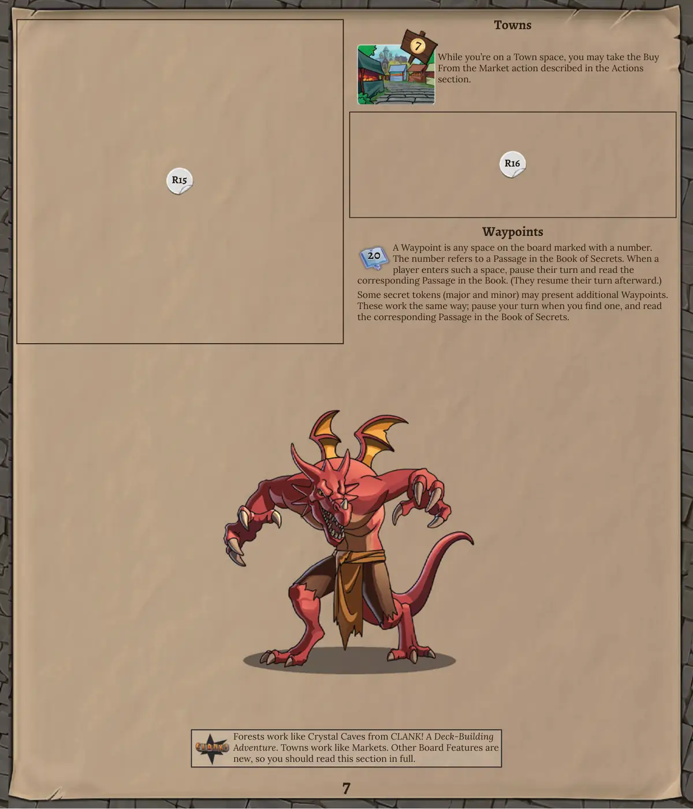
📝 第 7 页 AI 机翻对照（点击展开）
R15
城镇
当你位于城镇格时，你可以执行"从市场购买"行动，该行动在"行动"部分有描述。
R16
航点
航点是版图上标有数字的任何格。
这个数字指向《秘密之书》中的一条通道。当玩家进入这样的格时，暂停其回合并阅读《秘密之书》中相应的段落。（之后他们继续其回合。）
一些秘密指示物（主要和次要）可能会提供额外的航点。
这些航点的工作方式相同；当你找到一个时，暂停你的回合，并阅读《秘密之书》中相应的段落。
森林的作用类似于《CLANK! 一款牌组构建冒险》中的水晶洞穴。城镇的作用类似于市场。其他版图特性是新的，因此你应该完整阅读本节。
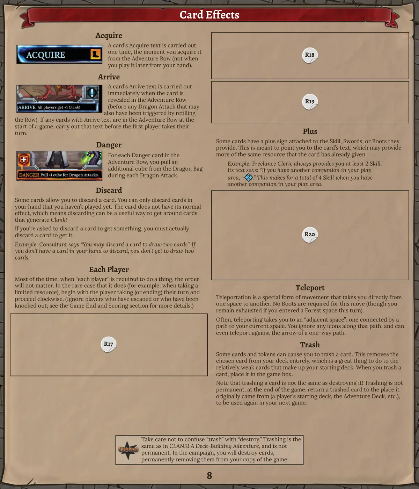
📝 第 8 页 AI 机翻对照（点击展开）
卡牌效果
获取
卡牌的获取文本在你从冒险行获取卡牌时执行一次（而不是在你之后从手牌中打出它时）。
到达
卡牌的到达文本在卡牌在冒险行中被揭示时立即执行（在任何可能因补充行而触发的龙攻击之前）。如果在游戏开始时冒险行中有带有到达文本的卡牌，在第一位玩家开始他们的回合之前执行该文本。
危险
对于冒险行中的每张危险卡牌，你在每次龙攻击期间需要从龙袋中额外抽取一个立方体。
弃牌
某些卡牌允许你弃置一张卡牌。你只能弃置你手中尚未打出的卡牌。该卡牌不会产生其正常效果，这意味着弃牌可以是一种避开产生铿锵声卡牌的有用方式。
如果你被要求弃置一张卡牌来获得某物，你必须实际弃置一张卡牌才能获得它。
示例：顾问说"你可以弃置一张卡牌来摸两张牌"。如果你手中没有可弃置的卡牌，你不能摸两张牌。
每位玩家
大多数情况下，当"每位玩家"需要执行某项操作时，顺序并不重要。在极少数情况下（例如：获取有限资源时），从正在结束（或开始）他们回合的玩家开始，然后顺时针进行。（忽略已逃脱或被淘汰的玩家；更多细节请参阅游戏结束和计分部分。）
R17
R18
R19
加号
某些卡牌在其提供的技能、剑或靴子上附加了一个加号。这是为了指向卡牌的文本，该文本可能提供更多该卡牌已经给予的相同资源。
示例：自由职业牧师总是为你提供至少2点技能。
其文本写道："如果你在你的游戏区域中有另一个同伴，+y。"当你在游戏区域中有另一个同伴时，总共提供4点技能。
R20
传送
传送是一种特殊的移动形式，让你直接从一个格移动到另一个格。这种移动不需要靴子（尽管如果你本回合进入了森林格，你仍然会感到疲惫）。
通常，传送会将你传送到"相邻格"：一个通过路径与你当前格相连的格。你忽略该路径上的任何图标，甚至可以沿着单向路径的箭头方向反向传送。
销毁
某些卡牌和指示物可以导致你销毁一张卡牌。这会将所选卡牌从你的牌库中完全移除，这对于销毁构成起始牌库的相对较弱的卡牌来说是一件好事。当你销毁一张卡牌时，将其放入游戏盒中。
请注意，销毁卡牌不同于摧毁卡牌！销毁不是永久性的；在游戏结束时，将销毁的卡牌返回到它原本所在的位置。
（来自玩家的起始牌库、冒险牌库等），
以便在下一局游戏中再次使用。
注意不要将"丢弃"与"摧毁"混淆。丢弃机制与《CLANK! A Deck-Building Adventure》中的相同，并非永久性的。在战役模式中，你将摧毁卡牌，从你的游戏副本中永久移除它们。
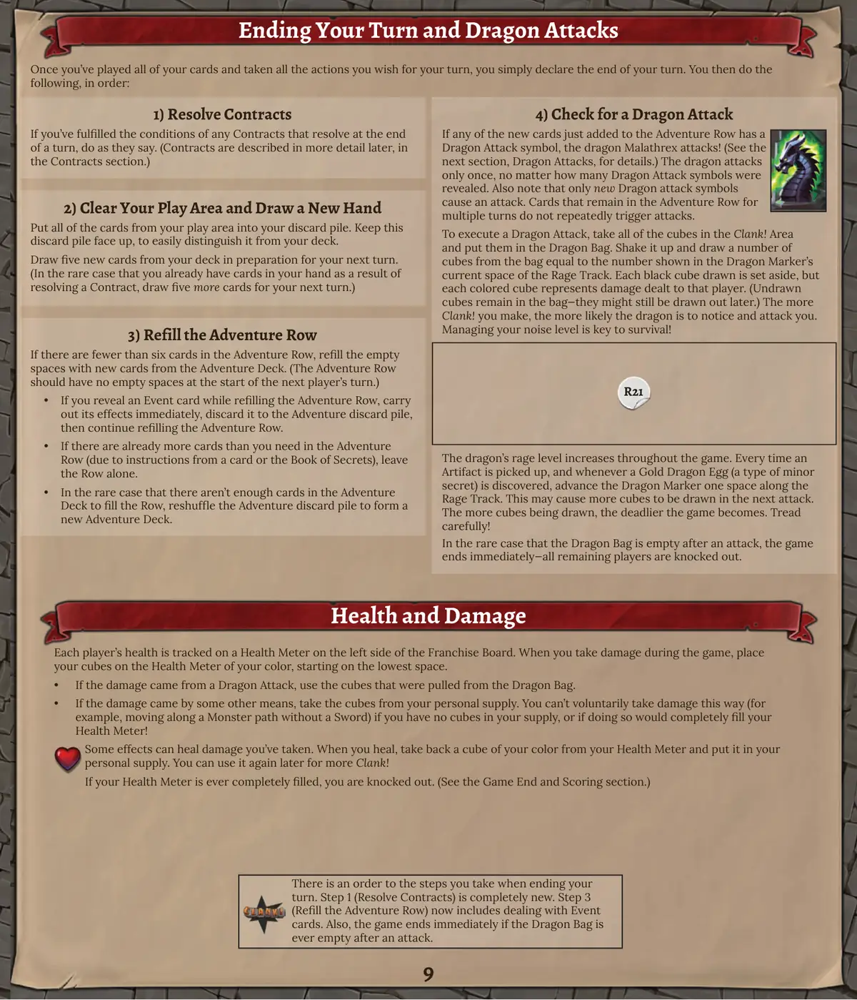
📝 第 9 页 AI 机翻对照（点击展开）
生命值与伤害
每位玩家的生命值记录在特许经营版图左侧的生命值表上。当你在游戏中受到伤害时，将你的立方体放在你颜色的生命值表上，从最低的格子开始放置。
•
如果伤害来自龙攻击，使用从龙袋中取出的立方体。
•
如果伤害来自其他方式，从你的个人储备中取出立方体。如果你的储备中没有立方体，或者这样做会完全填满你的生命值表，你不能自愿承受这种伤害（例如，在没有剑的情况下沿着怪物路径移动）。
某些效果可以治愈你受到的伤害。当你治疗时，从你的生命值表中取回一个你颜色的立方体，并将其放入你的个人储备中。你可以在稍后再次使用它来获得更多克朗克！
如果你的生命值表被完全填满，你将被淘汰出局。（参见游戏结束与计分部分。）
结束你的回合与龙攻击
1) 解决合约
如果你完成了任何在回合结束时解决的合约的条件，按照合约的说明执行。（合约将在后面的合约部分详细描述。）
2) 清理你的游戏区域并抽一张新手牌
将你游戏区域中的所有卡牌放入你的弃牌堆。保持这个弃牌堆正面朝上，以便与你的牌库区分开来。
为你的下一个回合准备，从你的牌库中抽取五张新牌。
（在罕见情况下，由于解决合约你手中已经有卡牌，为你的下一个回合再抽五张牌。）
3) 补充冒险行
如果冒险行中的卡牌少于六张，从冒险牌库中用新卡牌填补空白。（在下一个玩家的回合开始时，冒险行不应有空格。）
•
如果在补充冒险行时揭示事件卡牌，立即执行其效果，将其弃入冒险弃牌堆，然后继续补充冒险行。
•
如果冒险行中已经有超过所需的卡牌（由于卡牌或秘密之书的指示），不要动这个行。
•
在罕见情况下，冒险牌库中没有足够的卡牌来填满该行，将冒险弃牌堆重新洗牌形成新的冒险牌库。
4) 检查龙攻击
如果刚刚添加到冒险行中的任何新卡牌上有龙攻击符号，龙马拉瑟克斯会发动攻击！（详情见下一部分，龙攻击。）无论揭示了多少个龙攻击符号，龙只攻击一次。还要注意，只有新的龙攻击符号才会导致攻击。在冒险行中停留多个回合的卡牌不会重复触发攻击。
要执行龙攻击，取走克朗克区域中的所有立方体
并将它们放入龙袋中。摇晃袋子，然后从袋中抽取与龙标记在愤怒轨道当前所在空间显示数量相等数量的骰子。抽出的每个黑色骰子被放在一旁，但每个彩色骰子代表对该玩家造成的伤害。（未抽出的骰子留在袋中——它们稍后仍可能被抽出。）你制造的噪音越多，龙就越有可能注意到并攻击你。控制你的噪音水平是生存的关键！
R21
龙的愤怒程度在整个游戏过程中不断增加。每次拾取一件神器，以及每当发现一个金龙蛋（一种次要秘密类型）时，将龙标记沿愤怒轨道向前移动一格。这可能导致下次攻击时抽取更多骰子。抽取的骰子越多，游戏就越致命。请谨慎行事！
在极少数情况下，如果攻击后龙袋为空，游戏立即结束——所有剩余玩家都被淘汰。
当你打出了所有手牌并完成了你回合中希望执行的所有行动后，你只需宣布你的回合结束。然后按顺序执行以下操作：
结束回合时，你需要遵循的步骤是有顺序的。第1步（解决契约）是全新的。第3步（补充冒险牌列）现在包括处理事件卡。此外，如果攻击后龙袋 ever 为空，游戏立即结束。
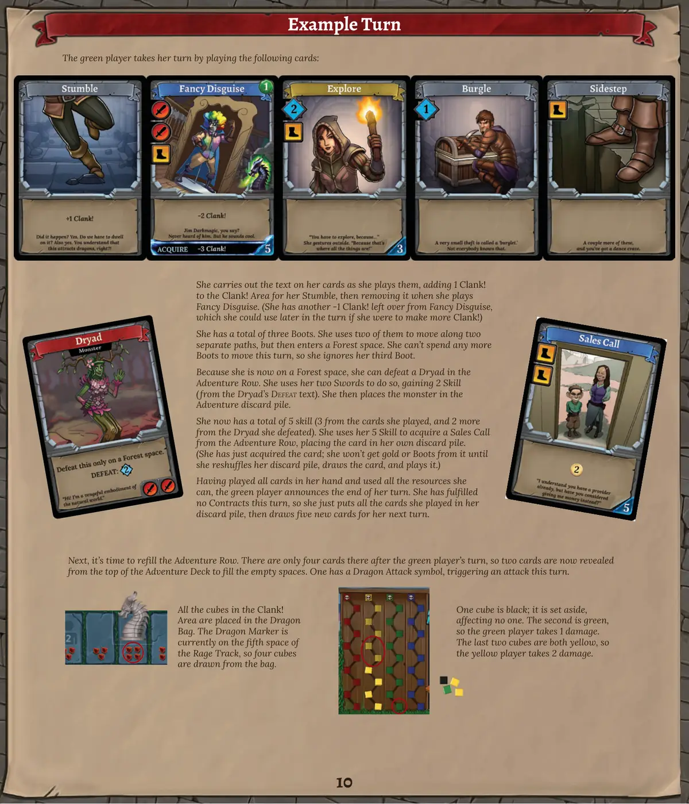
📝 第 10 页 AI 机翻对照（点击展开）
示例回合
绿色玩家通过打出以下卡牌来开始她的回合：
她打出卡牌时执行卡牌上的文本，因她的蹒跚而向"克朗克！"区域添加1点克朗克，然后在打出伪装时移除它。（她从伪装还剩下-1克朗克，如果她在本回合制造更多克朗克，可以稍后使用）
她总共有三双靴子。她使用其中两双沿着两条不同的路径移动，但随后进入一个森林格。她本回合不能再花费靴子移动，因此忽略她的第三双靴子。
因为她现在在森林格上，她可以击败冒险行中的一名树精。她使用她的两把剑来做到这一点，获得2点技能（来自树精的"击败"文本）。然后将这个怪物放入冒险弃牌堆。
她现在总共有5点技能（3点来自她打出的卡牌，另外2点来自她击败的树精）。她使用她的5点技能从冒险行中获得一次推销，将卡牌放入她自己的弃牌堆。（她刚刚获得了这张卡牌；直到她洗混弃牌堆、摸到这张卡牌并打出它，才能获得金币或靴子）
打出了手牌中的所有卡牌并使用了所有可用的资源后，绿色玩家宣布结束她的回合。她本回合没有完成任何契约，因此她只是将所有打出的卡牌放入她的弃牌堆，然后为下一回合摸五张新牌。
接下来，是时候补充冒险行了。绿色玩家的回合后那里只有四张卡牌，因此现在从冒险牌库顶揭示两张卡牌来填补空位。其中一张有龙攻击符号，触发了本回合的一次攻击。
"克朗克！"区域中的所有立方体都被放入龙袋。龙标记当前在愤怒轨道的第五格上，因此从袋中抽出四个立方体。
一个立方体是黑色的；它被放在一旁，不影响任何人。第二个是绿色的，因此绿色玩家受到1点伤害。最后两个立方体都是黄色的，因此黄色玩家受到2点伤害。
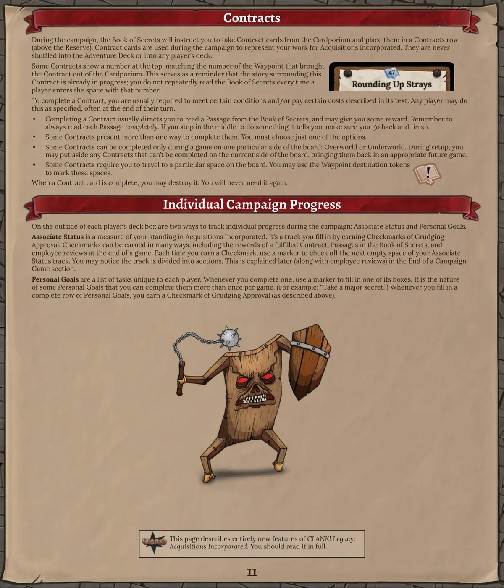
📝 第 11 页 AI 机翻对照（点击展开）
合约
在战役过程中，《秘密之书》会指示你从卡牌馆（Cardporium）中取出合约牌，并将它们放置在一排合约中（在储备区上方）。合约牌在战役期间用于代表你为收购无限公司（Acquisitions Incorporated）完成的工作。它们永远不会被洗入冒险牌库或任何玩家的牌库中。
一些合约顶部显示一个数字，与将这张合约带出卡牌馆的路标（Waypoint）的数字相匹配。这提醒你，围绕此合约的故事已经进行中；当玩家进入带有该数字的区域时，你不需要重复阅读《秘密之书》。
要完成一张合约，通常需要满足其文本中描述的某些条件和/或支付特定费用。任何玩家都可以按照规定完成，通常在其回合结束时。
• 完成合约通常会指示你阅读《秘密之书》中的一段文字（Passage），并可能给你一些奖励。请务必完整阅读每一段文字。如果你中途停下来做它告诉你的事情，确保你回去完成它。
• 一些合约提供了多种完成方式。你必须只选择其中一个选项。
• 一些合约只能在版图的特定一侧的游戏中完成：地表世界（Overworld）或地下世界（Underworld）。在设置阶段，你可以将那些无法在当前版图一侧完成的合约放在一边，在适当未来的游戏中再带回。
• 一些合约要求你前往版图上的特定区域。你可以使用路标目的地指示物（Waypoint destination tokens）来标记这些区域。
当一张合约牌完成时，你可以将其销毁。你将不再需要它。
个人战役进度
在每个玩家的牌盒外部，有两种方式来追踪战役中的个人进度：合伙人状态（Associate Status）和个人目标（Personal Goals）。
合伙人状态是你在收购无限公司中地位的衡量标准。这是一个通过获得勉强批准的勾选标记（Checkmarks of Grudging Approval）来填满的进度条。勾选标记可以通过多种方式获得，包括完成合约的奖励、《秘密之书》中的文字段落以及游戏结束时的员工评估。每次你获得一个勾选标记时，使用一个标记来勾选你合伙人状态进度条上的下一个空格。你可能注意到这个进度条被分成了几个部分。这将在后面的"战役游戏结束"部分解释（连同员工评估一起）。
个人目标是每个玩家独特的任务列表。每当完成一个，使用标记填满其方框中的一个。有些个人目标的特性是，你可以在一局游戏中多次完成它们。（例如："获取一个重大秘密。"）每当填满一个
完成一整排个人目标，你将获得一个勉强认可的标记（如上所述）。
本页完全描述了 CLANK! Legacy: Acquisitions Incorporated 的新特性。你应该完整阅读。
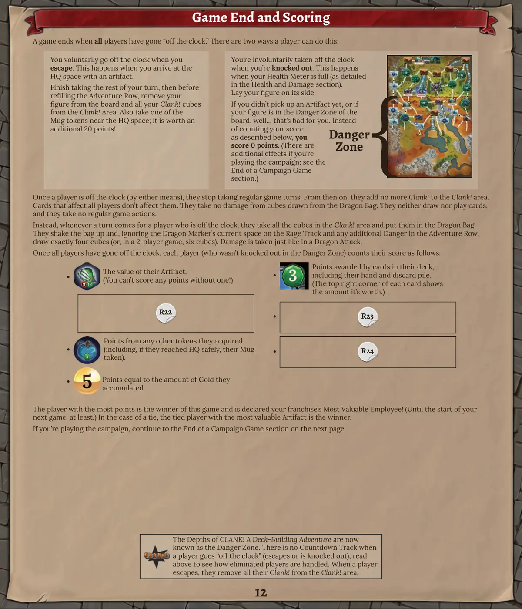
📝 第 12 页 AI 机翻对照（点击展开）
当所有玩家都"下班"时，游戏结束。玩家可以通过以下两种方式做到这一点：
游戏结束与计分
•
他们牌库中的卡牌所获得的分数，包括他们的手牌和弃牌堆。
（每张卡牌的右上角显示了它的价值。）
•
R23
•
R24
•
他们的神器价值。（没有神器，你无法获得任何分数！）
R22
•
他们获得的任何其他指示物的分数（包括，如果他们安全到达总部，他们的马克杯指示物）。
•
等于他们积累的金币数量的分数。
分数最高的玩家是本游戏的获胜者，并被宣布为你的连锁店最有价值员工！（至少直到下一轮游戏开始为止。）如果平局，则拥有最有价值神器的平局玩家是获胜者。
如果你正在玩战役模式，请继续到下一页的"战役游戏结束"部分。
当你逃脱时，你自愿下班。当你带着神器到达总部区域时，就会发生这种情况。
完成你回合的剩余部分，然后在重新填充冒险牌行之前，将你的棋子从版图上移除，并将你所有的克朗！立方体从克朗！区域移除。同时拿走总部区域附近的一个马克杯指示物；它额外值20分！
一旦玩家下班（通过任一方式），他们就停止进行常规游戏回合。从那时起，他们不再向克朗！区域添加更多的克朗！立方体。
影响所有玩家的卡牌不再影响他们。他们不会从龙袋中抽取的立方体受到伤害。他们既不抽牌也不出牌，也不进行任何常规游戏行动。
相反，每当轮到下班的玩家时，他们会拿走克朗！区域中的所有立方体，并将它们放入龙袋。他们摇晃袋子，忽略愤怒轨道上当前龙标记的位置和冒险牌行中的任何额外危险，抽取恰好四个立方体（或者在双人游戏中，抽取六个立方体）。伤害的承受方式就像在龙攻击中一样。
一旦所有玩家都下班了，每个玩家（没有被危险区域淘汰的）按如下方式计算他们的分数：
当你的生命值表满时（如"生命值与伤害"部分详细说明），你被淘汰而被迫下班。将你的棋子侧放。
如果你还没有拾取神器，或者你的棋子在版图的危险区域中，那么...这对你来说很糟糕。你不会像下面描述的那样计算分数，而是得0分。（如果你正在玩战役模式，还有额外效果；请参见"战役游戏结束"部分。）
危险区域
克朗！A卡牌构建冒险的深渊现在被称为危险区域。当玩家"下班"（逃脱或被淘汰）时，没有倒计时轨道；请阅读上文了解被淘汰玩家如何处理。当玩家
如果他们逃脱，他们会将他们所有的 Clank! 从 Clank! 区域中移除。
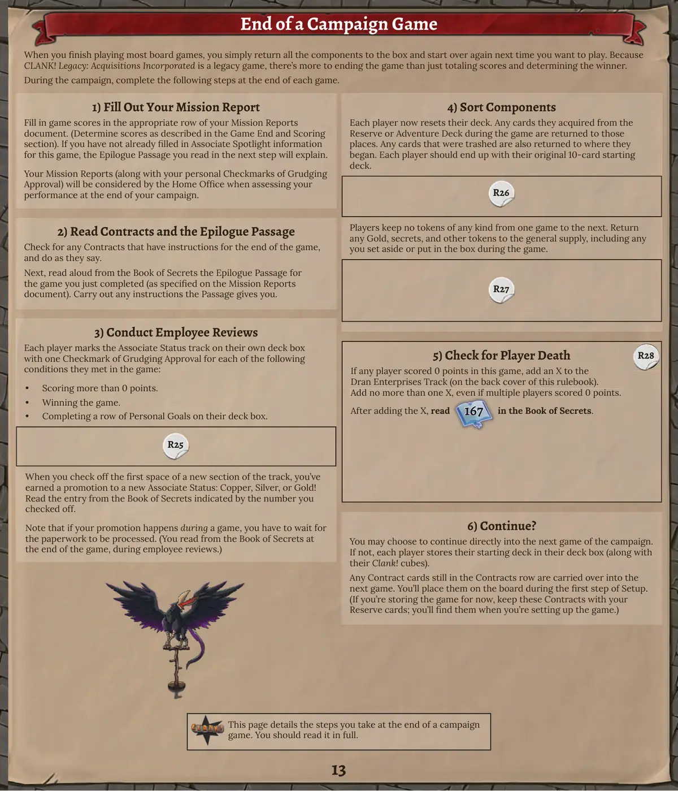
📝 第 13 页 AI 机翻对照（点击展开）
战役游戏结束
1) 填写你的任务报告
在你的任务报告文档的相应行中填写游戏分数。（按照游戏结束与计分部分所述确定分数）。如果你尚未为本次游戏填写助理聚光灯信息，下一步你将阅读的尾声段落会解释说明。
你的任务报告（连同你个人的勉强认可检查标记）将在总部评估你在整个战役中的表现时被考虑。
2) 阅读合同和尾声段落
检查是否有合同包含游戏结束的说明，并按照指示执行。
接下来，大声朗读秘密之书中你刚完成游戏的尾声段落（如任务报告文档上所指定）。执行该段落给出的任何指示。
3) 进行员工评估
每位玩家在自己牌盒的助理状态轨道上，根据他们在游戏中满足的以下每个条件标记一个勉强认可检查标记：
•
得分超过0分。
•
赢得游戏。
•
完成自己牌盒上一行个人目标。
R25
当你勾选轨道新部分的第一格时，你就获得了晋升到新的助理等级：铜级、银级或金级！阅读秘密之书中由你勾选的数字指示的条目。
注意，如果你的晋升发生在游戏过程中，你必须等待文件处理完毕。（你将在游戏结束时的员工评估环节阅读秘密之书。）
4) 整理组件
每位玩家现在重置自己的牌库。他们在游戏中从储备库或冒险牌库获得的任何卡牌都返回到那些地方。任何被丢弃的卡牌也返回到它们开始的位置。每位玩家最终应该拥有他们最初的10张起始牌库。
R26
玩家不保留任何类型的指示物到下一局游戏。将任何金币、秘密和其他指示物归还到公共供应区，包括你在游戏期间放置一旁或放入盒中的任何指示物。
R27
5) 检查玩家死亡
如果有任何玩家在本局游戏中得0分，在德兰企业轨道（在本规则书封底）上添加一个X。
即使有多位玩家得0分，也只添加一个X。
添加X后，阅读秘密之书中的
。
R28
R28
R28
- 继续？
你可以选择直接进入战役的下一局游戏。
如果不继续，每位玩家将起始牌库存储在自己的牌盒中（连同他们的克朗！方块）。
仍在合同行的任何合同卡将延续到下一局游戏。你将在设置的第一步将它们放置到版图上。（如果你现在要存放游戏，将这些合同卡与你的起始牌库一起保存。）
<!--page:N-->
预留卡牌；你会在设置游戏时找到它们。)
当你玩完大多数桌游时，你只需将所有组件放回盒中，下次想玩时再重新开始。因为
CLANK! Legacy: Acquisitions Incorporated 是一款传承游戏，所以结束游戏的步骤不仅仅是计算分数和确定获胜者。
在战役期间，在每局游戏结束时完成以下步骤。
本页详细说明了你在战役游戏结束时需要执行的步骤。你应该完整阅读。
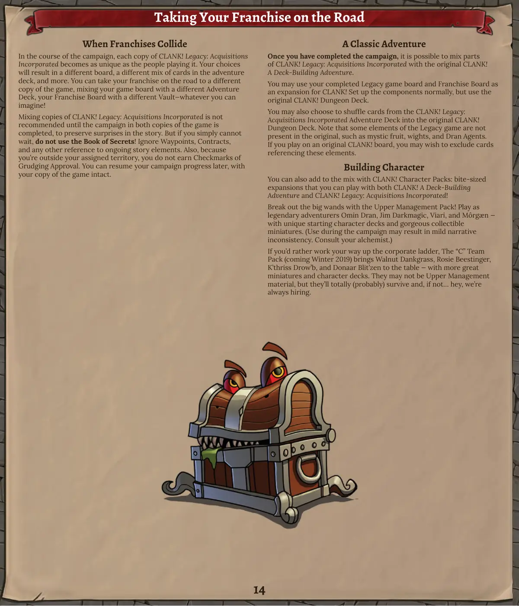
📝 第 14 页 AI 机翻对照（点击展开）
带着你的特许经营权上路
当特许经营权碰撞
在战役过程中，每一份《CLANK! Legacy: Acquisitions Incorporated》都会变得像玩它的人一样独特。你的选择将导致不同的版图、冒险牌库中不同的卡牌组合，等等。你可以带着你的特许经营权到另一份游戏副本中去，将你的游戏版图与不同的冒险牌库混合，你的特许经营权版图与不同的宝库混合——任何你能想象到的！
不建议在两份游戏的战役都完成之前混合《CLANK! Legacy: Acquisitions Incorporated》的副本，以保留故事中的惊喜。但如果你实在等不及了，不要使用秘密之书！忽略路径点、合同以及对任何其他持续故事元素的引用。此外，因为你已经超出了你分配的领土，你不会获得勉强认可的标记。你可以稍后继续你的战役进度，保持你的游戏副本完整。
经典冒险
一旦你完成了战役，就可以将《CLANK! Legacy: Acquisitions Incorporated》的部分内容与原始的《CLANK! A Deck-Building Adventure》混合使用。
你可以将你完成的遗产游戏版图和特许经营权版图作为《CLANK!》的扩展使用。正常设置组件，但使用原始的《CLANK!》地下城牌库。
你也可以选择将《CLANK! Legacy: Acquisitions Incorporated》冒险牌库中的牌洗入原始的《CLANK!》地下城牌库中。请注意，一些遗产游戏元素在原始游戏中不存在，例如神秘果实、幽灵和德兰特工。如果你在原始的《CLANK!》版图上游戏，你可能希望排除引用这些元素的卡牌。
构建角色
你也可以通过《CLANK! Character Packs》来增加混合内容：这些是小型扩展，你可以与《CLANK! A Deck-Building Adventure》和《CLANK! Legacy: Acquisitions Incorporated》一起游戏！
用高级管理包挥舞大魔杖！扮演传奇冒险者奥明·德兰、吉姆·达克马吉克、维阿里和摩根——拥有独特起始角色牌组和精美收藏版迷你雕像。（在战役中使用可能会导致轻微的叙事不一致。咨询你的炼金术师。）
如果你更愿意在公司阶梯上步步高升，"C"队包（2019年冬季推出）将核桃· Dankgrass、罗西·比斯廷格、克希里斯·德罗布和多纳尔·布利岑带到桌前——带来更多精彩的迷你雕像和角色牌组。他们可能不是高级管理的人才，但他们会完全（可能）幸存下来，如果不行……嘿，我们总是在招聘。
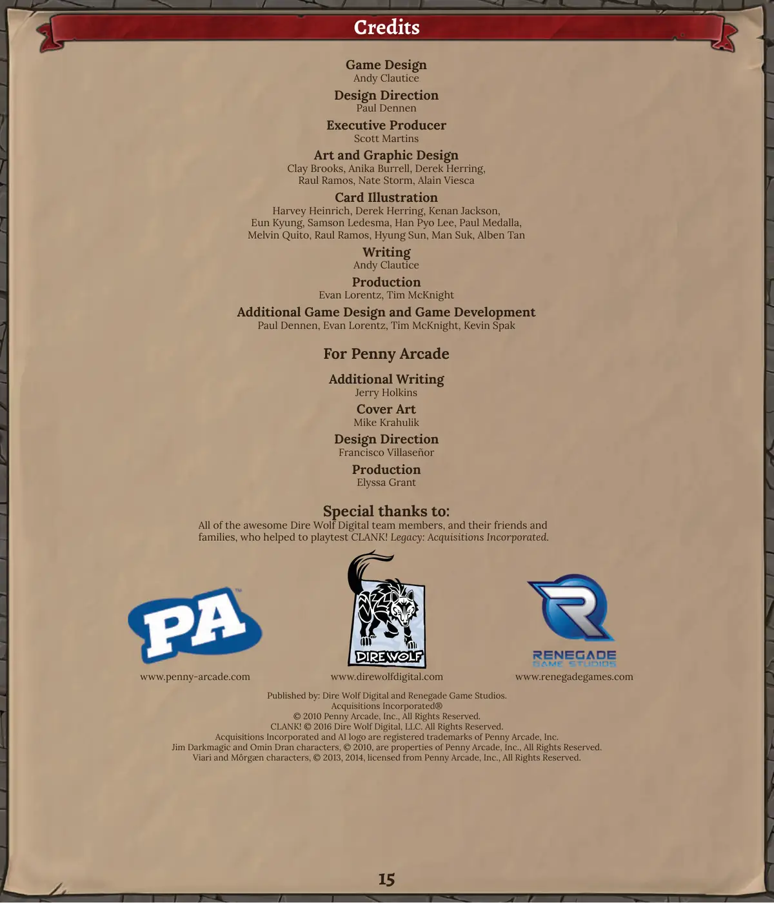
📝 第 15 页 AI 机翻对照（点击展开）
鸣谢
出版方：Dire Wolf Digital 和 Renegade Game Studios.
Acquisitions Incorporated®
© 2010 Penny Arcade, Inc., 保留所有权利.
CLANK! © 2016 Dire Wolf Digital, LLC. 保留所有权利.
Acquisitions Incorporated 和 AI 标志是 Penny Arcade, Inc. 的注册商标.
Jim Darkmagic 和 Omin Dran 角色，© 2010，是 Penny Arcade, Inc. 的财产，保留所有权利.
Viari 和 Môrgæn 角色，© 2013, 2014，从 Penny Arcade, Inc. 获得许可，保留所有权利.
www.direwolfdigital.com
www.renegadegames.com
www.penny-arcade.com
游戏设计
Andy Clautice
设计指导
Paul Dennen
执行制片人
Scott Martins
美术与平面设计
Clay Brooks, Anika Burrell, Derek Herring,
Raul Ramos, Nate Storm, Alain Viesca
卡牌插画
Harvey Heinrich, Derek Herring, Kenan Jackson,
Eun Kyung, Samson Ledesma, Han Pyo Lee, Paul Medalla,
Melvin Quito, Raul Ramos, Hyung Sun, Man Suk, Alben Tan
文案
Andy Clautice
制作
Evan Lorentz, Tim McKnight
额外游戏设计与游戏开发
Paul Dennen, Evan Lorentz, Tim McKnight, Kevin Spak
为 Penny Arcade 而作
额外文案
Jerry Holkins
封面艺术
Mike Krahulik
设计指导
Francisco Villaseñor
制作
Elyssa Grant
特别感谢：
所有出色的 Dire Wolf Digital �队成员，以及他们的朋友和家人，
他们帮助测试了 CLANK! Legacy: Acquisitions Incorporated.
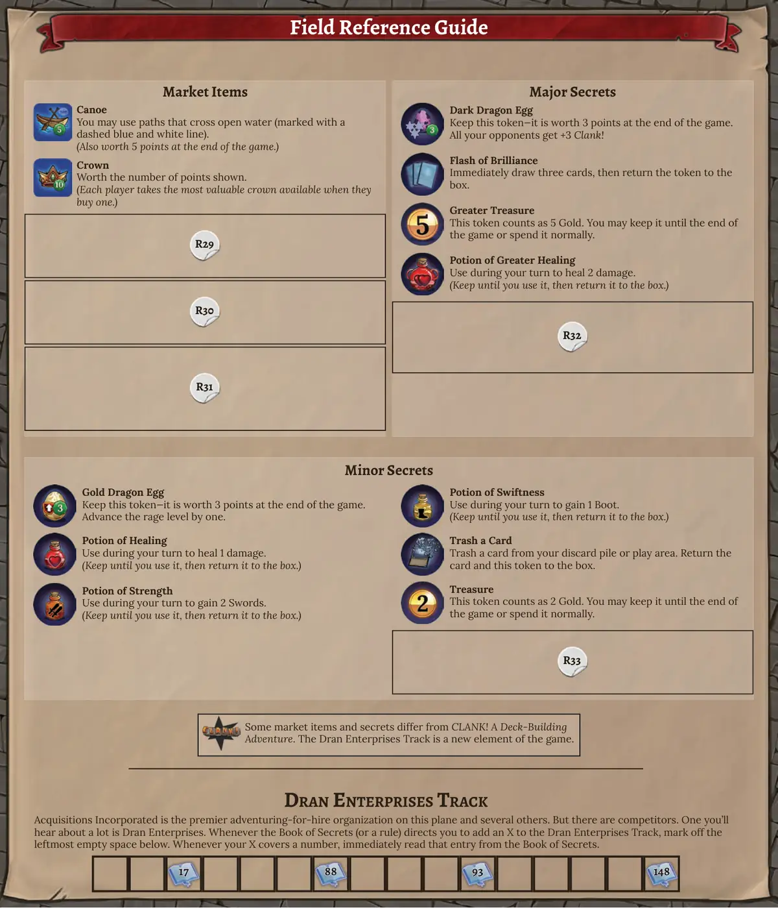
📝 第 16 页 AI 机翻对照（点击展开）
次要秘密
市场物品
独木舟
你可以使用穿越开放水域（标记为虚线蓝白线）的路径。
（游戏结束时也值5分。）
王冠
价值所示分数。
（每位玩家购买王冠时，拿取最有价值的王冠。）
R29
R30
R31
场地参考指南
主要秘密
黑暗龙蛋
保留这个指示物——游戏结束时它值3分。
你所有对手获得+3点克朗克！
才华迸发
立即抽三张牌，然后将这个指示物放回盒中。
更大宝藏
这个指示物算作5金币。你可以保留它直到游戏结束或正常使用它。
更强治疗药水
在你的回合期间使用，治疗2点伤害。
（保留直到你使用它，然后将其放回盒中。）
R32
金龙蛋
保留这个指示物——游戏结束时它值3分。
将愤怒等级提升一级。
治疗药水
在你的回合期间使用，治疗1点伤害。
（保留直到你使用它，然后将其放回盒中。）
力量药水
在你的回合期间使用，获得2把剑。
（保留直到你使用它，然后将其放回盒中。）
敏捷药水
在你的回合期间使用，获得1双靴子。
（保留直到你使用它，然后将其放回盒中。）
弃掉一张牌
从你的弃牌堆或出牌区弃掉一张牌。将这张牌和这个指示物放回盒中。
宝藏
这个指示物算作2金币。你可以保留它直到游戏结束或正常使用它。
R33
德兰企业轨道
收购有限公司是这个平面以及几个其他平面上最顶级的冒险雇佣组织。但也有竞争对手。你会经常听到的一个是德兰企业。每当秘密之书（或规则）指示你在德兰企业轨道上添加一个X时，在下方标记最左边的空白空间。每当你的X覆盖一个数字时，立即从秘密之书中阅读该条目。
一些市场物品和秘密与《克朗克！一款卡牌构建冒险游戏》不同。德兰企业轨道是游戏的一个新元素。